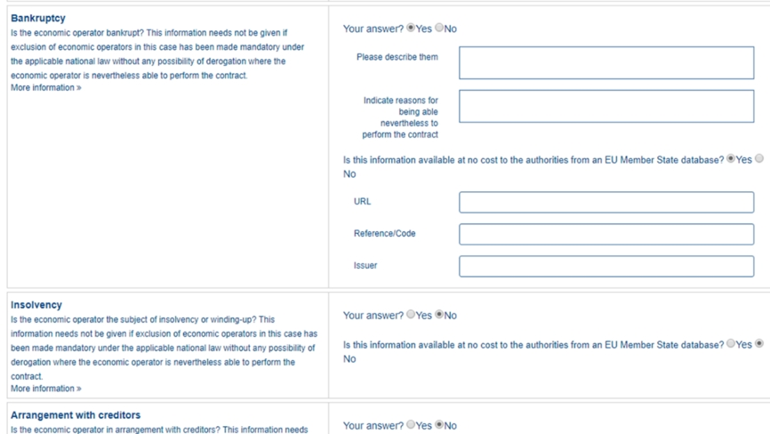

Exclusion grounds
| The links to the business code explanations are provided by e-Sens and are hosted by the University of Piraeus. Availability to the information is therefore subject to external schedules. |
REQUIREMENT tbr092-015, br41-002 |
The contracting body shall provide the exclusion grounds and selection criteria for its tendering process as structured information - via ESPD template or structured list of criteria set out in a call for tender. |
REQUIREMENT tbr070-009 |
The ESPD request must contain information about the criteria that set the exclusion grounds as stated in directive 2014/24/EU Art. 57 and referred to in directive 2014/25/EU Art. 80 and/or according to national legislation. These should be retrieved from e-Certis. |
As suggested in section "Criteria Data Structures" criteria may be grouped in several different categories. The figure below is intended to identify and list these categories for the Exclusion criteria (branches in text boxes), and specific subgroups within each category (leaves in text without boxes).
Each branch in this 'criteria classification' corresponds to one data structure that is identical for all the leaves under that branch.
Figure 1. Exclusion criteria classification
Convictions
Information requirement
See formal requirements related to exclusion grounds in the BIS 41 - European Single Procurement Document (Version 2.0.0), and more specifically tbr070-009, tbr070-004, tbr070-013.
The label ''Convictions'' groups all the criteria with identical data structures classified as:
''participation in a criminal organisation'', ''corruption'', ''fraud'', ''terrorist offences linked to terrorist activities'', ''money laundering or terrorist financing'', ''child labour and other forms of trafficking in human beings''.
| Note about the ESPD Service |
In an initial phase, the European Commission provided an ESPD service to support the ESPD’s uptake. As announced in 2018, on 2 May 2019, the Commission’s ESPD service has been turned off. To reap the full benefit of an electronic ESPD, the integration with national eProcurement services and national databases is necessary. This will enable data reusability, default form pre-filling and data interexchange among different databases. In turn, buyers and suppliers will benefit from the automatism, making the application of the ESPD much easier and decreasing the data errors rates.
XML Example
The fragment of XML code below illustrates how a 'Convictions' criterion looks like in ESPD Request. See comments beneath the example.
'Participation in a criminal organisation' conviction
Please generate an ESPD Request and ESPD Response documents on ESPD Demo Site to see a full example.
-
Date of conviction. Mandatory format 'YYYY-MM-DD'
-
The reason of convictions. A descriptive text.
-
The natural person or legal entity convicted. A text.
-
Length of the period of exclusion. A cac:Period will be used in the response by the economic operator. The EO may specify a starting date and an end-date or, alternatively, a text to commenting the length. See XML example in the ESPD Response section.
-
If the answer is No the QUESTION 'Please describe them' should not be shown.
-
Text box to describe the measures to demonstrate the economic operator’s reliability.
-
A whole group related to one conviction can be repeated multiple times (or deleted).
-
If answered as No the group of QUESTION(s) relating the online evidence should not be shown. Beware that the ESPD Response behaves totally differently as far as evidences are concerned. The data concerning the evidence in the ESPDRequest document is placed in the ESPD Response document in a component cac:Evidence in a different manner. See the section ESPD Response for more details on this. See also the XML examples.
-
The URL where to access the evidence. Will be placed in an element of the object cac:Evidence. See chapter "6.8 Evidences".
-
By specifying that the value of the expected data type is an evidence identifier (code EVIDENCE_IDENTIFIER of the Code List ResponseDataType`) the Response will have to contain an evidence supplied in an element of the object cac:Evidence, at the end of the XML Instance. See chapter "6.8 Evidences".
-
The issuer party of this evidence (e.g. a base registry). Will be placed in the element cac:Evidence/cac:DocumentReference/cac:Attachment/cac:IssuerParty. Some countries use verification codes associated to evidences. To specify these verification codes you can use the Evidence ID, as in the end the code identifies uniquely the Evidence in the issuer system (see this XML example, look for 'Verification code' inside the example, bullet number 6).
-
National criterion defined by the MS in e-Certis (this example corresponds to Finland) related to the EU criterion on this conviction.
-
An additional specification for this national criterion, in this case related to the evidence that will be required by this Member State.
-
UUID supplied by e-Certis. See also the criterion spread-sheet.
-
Exclusion criteria taxonomy code defined in the criterion spread-sheet.
-
Compulsory name and description for the criterion as defined in e-Certis. See also ESPD-criterion spreadsheet. Beware that UBL-2.3 allows '0..n' description lines!
-
This property is a caption, a mere 'label'. See Code List CriterionElementType for the complete list of possible options. Beware that when a property is of type CAPTION the cbc:ValueDataType must be set to NONE.
-
As the property is a CAPTION no response is expected from the economic operator. See Code List 'ResponseDataType' for the complete list of possible options.
-
Notice that in the ESPD Request the criterion properties never use its element cbc:Name.
-
EU legislation data related to this criterion. Notice that all the textual fields have multiple cardinality and may specify the language (attribute languageID. This can be used to express the same content in different languages. No language specified defaults to en (English).
-
The complete title as published in Eurlex or in a national official electronic bulletin board is expected for this field.
-
A quick reference name to refer to the legislation is expected for this field.
-
The jurisdiction level (or scope) covered by this legislation.
-
One or more articles from this legislation where the criterion is defined and referred to. Beware that the cardinality of this field is multiple.
-
Groups codified as ON* must be processed always (e.g. all its elements shown on a GUI or automatically parsed and saved, etc.).
-
Pay attention to this type of QUESTION(s). It is intended to act as a decision point. If answered with yes (INDICATOR value = true) some additional questions will be asked to the economic operator. Thus the value of the code of the next sub-group (set to ONTRUE).
-
This property is a QUESTION, therefore a specific type of value will be expected from the economic operator in the ESPD Response (an INDICATOR, i.e. a 'boolean' value true/false, in this case).
-
The cbc:ValueDataType indicates the type of value that the buyer requires for this QUESTION. Therefore, in its answer (inside the ESPD Request document) the economic operator will have to use also an INDICATOR value (true/false). Otherwise the mechanism used to validate the ESPD Response should consider the XML instance as invalid (should be treated as a FATAL error).
-
Data structures defined by GROW are re-usable. This is specially the case (but not uniquelly) of the structure 'Is this information available electronically?' Notice that the UUID that identifies this structure is always the same in all the criteria that include it. Similarly structures that are reused in different criteria do have the same UUID (as they are the same). Beware that the group of properties (URI, Reference/Code, Issuer) will only be shown if the answer is 'Yes', thus the sub-group code ONTRUE.
|
Note for the future: Cross-border/cross-sector codes Some relevant trans-European initiatives like ECRIS, BRIS, EESSI, and other, have defined Code Lists and other reference data that could be used in e-Procurement, and specifically by the ESPD. This would enhance the cross-border and cross-sector semantic and technical interoperability. Thus, in the case of Convictions, a new requirement could be introduced in G1 (see figures above) asking for the ECRIS Code corresponding to the offence that will be specified in the Response in case the Economic Operator answered ''yes'' to the first Requirement. The ECRIS Codes can be consulted in the Annex to the COUNCIL DECISION 2009/316/JHA of 6 April 2009 on the establishment of the European Criminal Records Information System (ECRIS) in application of Article 11 of Framework Decision 2009/315/JHA. |
Contributions
Related information requirements
See formal requirements related to exclusion grounds in the BIS 41 - European Single Procurement Document (Version 2.0.0), and more specifically tbr070-009, tbr070-004, tbr070-013.
REQUIREMENT |
The buyer needs to be able to specify national exclusion criteria linked to one EU criterion as well as criteria particular for the procurement procedure. The economic operator, in the ESPD Response document, will have to responde "Yes" or "No" to each national criterion thus confirming that it in breach of the Law. |
See also the REQUIREMENT tbr070-015 about economic thresholds regarding unpaid taxes or social security obligations.
Mock-ups - buyer perspective
This other screen-capture below represents a possible mock-up, from the buyer perspective, for the edition of requirements in 'Contributions' criterion (Payment of Taxes).

Figure 3. 'Payment of Taxes', REQUIREMENT edition (Buyer Perspective)
Mock-ups - economic operator perspective
This other mock-up illustrates what the economic operator sees.
|
Beware that this mock-up is not showing the national criteria. For this mock-up it is presumed that by answering 'Yes' to the general EU criterion all the national criteria QUESTION 'Your answer' will be also set to 'Yes'. |

Figure 4. 'Payment of Taxes', (EO perspective)
XML Example
Payment of Taxes (PoT)
Please generate an ESPD Request and ESPD Response documents on ESPD Demo Site to see a full example.
-
The MS defined this national 'Payment of Taxes' criterion in e-Certis.
-
Reference to the EU Legislation. This reusable structure is identical for all the exclusion criteria.
-
For this ESPD Request Payment of Taxes criterion, the Member State defined in e-Certis a national REQUIREMENT consisting in the specification of the 'threshold amount of debt that an economic operator have with the national Tax Agency' (50 Euros in this example).
-
Notice that type of property used is REQUIREMENT. This entails that: a cbc:ValueDataType will be present indicating the type of value the buyer uses for this REQUIREMENT (e.g. AMOUNT, INDICATOR, DESCRIPTION, etc.; see the Code List ResponseDataType, the values are the same for buyers REQUIREMENT(s) than for economic operator response values).
-
Beware that No answer is expected here from the economic operator (do not get confused by the presence of the cbc:ValueDataType, as said it is used by both the Buyer and the EO.
-
The value supplied by the buyer for this requirement (50 Euros, in this example). Notice that the currency is specified in the attibute currencyID of the cbc:Amount component.
-
The MS also allows the buyer the possibility of adding multiple additional textual requirements (in this case the Buyer uses this to explain that ''Beware that the national Tax Agency won’t permit the existence of a debt, even if minimial, for two consecutive years'').
-
Again, no answer is expected here from the economic operator, as this is a REQUIREMENT issued by the buyer. Hence the element 'cbc:ValueDataTypeCode' contains the type of value of the requirement issued by the buyer.
Environment, Social, Labour Law
Related information requirements
See formal requirements related to exclusion grounds in the BIS 41 - European Single Procurement Document (Version 2.0.0), more specifically tbr070-009, tbr070-004, tbr070-013.
Category ''Social'' encompasses criteria with identical data structures, classified as:
''breaching of obligations in the fields of environmental law'', ''breaching of obligations in the fields of social law'' and ''breaching of obligations in the fields of labour law''.

Mock-ups - economic operator perspective
|
Beware that this mock-up is not showing the national criteria. For this mock-up it is presumed that by answering 'Yes' to the general EU criterion all the national criteria QUESTION 'Your answer' will be also set to 'Yes'. |

Figure 7. 'Environmental Law' criterion mock-up - EO perspective
XML Example
'Environmental Law'
Please generate an ESPD Request and ESPD Response documents on ESPD Demo Site to see a full example.
Business
Related information requirements
See formal requirements related to exclusion grounds in the BIS 41 - European Single Procurement Document (Version 2.0.0), and more specifically tbr070-009, tbr070-004, tbr070-013.

Mock-ups - economic operator perspective
| Beware that this mock-up is not showing the national criteria. For this mock-up it is presumed that by answering 'Yes' to the general EU criterion all the national criteria QUESTION 'Your answer' will be also set to 'Yes'. |

Figure 10. 'Bankruptcy' criterion mock-up - economic operator perspective
XML Example
'Bankruptcy'
Please generate an ESPD Request and ESPD Response documents on ESPD Demo Site to see a full example.
Misconduct
Related information requirements
See formal requirements related to exclusion grounds in the BIS 41 - European Single Procurement Document (Version 2.0.0), and more specifically tbr070-009, tbr070-004, tbr070-013.
Mock-ups - buyer perspective

Figure 12. 'Professional misconduct' criterion mock-up - buyer perspective
Mock-ups - economic operator perspective
| Beware that this mock-up is not showing the national criteria. For this mock-up it is presumed that by answering 'Yes' to the general EU criterion all the national criteria QUESTION 'Your answer' will be also set to 'Yes'. |

Figure 13. 'Professional misconduct' criterion mock-up - economic operator perspective
XML Example
'Professional Misconduct' Please generate an ESPD Request and ESPD Response documents on ESPD Demo Site to see a full example.
Conflict of interest
Related information requirements
See formal requirements related to exclusion grounds in the BIS 41 - European Single Procurement Document (Version 2.0.0), and more specifically tbr070-009, tbr070-004, tbr070-013.
We have divided the conflict of interest criteria in two groups, this first group is composed of two criteria with the same structure:
-
partic-confl: Conflict of interest due to ''direct or indirect involvement in the preparation of this procurement procedure'';
-
prep-confl: Conflict of interest due to ''participation in the procurement procedure''.
The second group, named ''Early termination'', is explained in a different section. See section "Early termination).
Mock-ups - buyer perspective

Figure 15. 'Conflict of interest' criterion mock-up - buyer perspective
Mock-ups - economic operator perspective
| Beware that this mock-up is not showing the national criteria. For this mock-up it is presumed that by answering 'Yes' to the general EU criterion all the national criteria QUESTION 'Your answer' will be also set to 'Yes'. |

Figure 16. 'Conflict of interest' criterion mock-up - economic operator perspective
XML Example
'Participation in the procurement procedure' conflict of interest Please generate an ESPD Request and ESPD Response documents on ESPD Demo Site to see a full example.
Early termination
Related information requirements
See formal requirements related to exclusion grounds in the BIS 41 - European Single Procurement Document (Version 2.0.0), more specifically tbr070-009, tbr070-004, tbr070-013.

Mock-ups - economic operator perspective
| Beware that this mock-up is not showing the national criteria. For this mock-up it is presumed that by answering 'Yes' to the general EU criterion all the national criteria QUESTION 'Your answer' will be also set to 'Yes'. |

Figure 19. 'Early termination' criterion mock-up - economic operator perspective
XML Example
Early termination conflict of interest Please generate an ESPD Request and ESPD Response documents on ESPD Demo Site to see a full example.
Misrepresentation
Related information requirements
See formal requirements related to exclusion grounds in the BIS 41 - European Single Procurement Document (Version 2.0.0), and more specifically tbr070-009, tbr070-004, tbr070-013.

Mock-ups - economic operator perspective
| Beware that this mock-up is not showing the national criteria. For this mock-up it is presumed that by answering 'Yes' to the general EU criterion all the national criteria QUESTION 'Your answer' will be also set to 'Yes'. |

Figure 22. 'Misrepresentation' criterion mock-up - economic operator perspective
|
The UBL specification allows always multiple lines of text for the component cbc:Description. This feature can be used to split long descriptions into multiple lines, specially when the description contains enumerations. The data structure for the criterion "Guilty of misrepresentation […]" below uses the feature to divide four possible cases into different lines. Software and transformation solutions can also use it to generate an XML instance where the enumeration is split in multiple cbc:Description lines. See screen-captures below representing the data structures of this criterion for the model. |
XML Example
'Misrepresentation' conflict of interest
Please generate an ESPD Request and ESPD Response documents on ESPD Demo Site to see a full example.
Purely national criteria
Related information requirements
See formal requirements related to exclusion grounds in the BIS 41 - European Single Procurement Document (Version 2.0.0), and more specifically tbr070-009, tbr070-004, tbr070-013.
Other requirements related specifically to purely national criteria are:
REQUIREMENT |
The Member State must be able to specify in e-Certis individual national criteria, and the economic operator must be able to answer to each individual purely national exclusion grounds criterion. |
REQUIREMENT |
For the purely national exclusion grounds that have evidences related in e-Certis, the required evidences should be displayed. When the criterion has no related evidences, the text "No evidence required for this criterion" should be displayed. Per each national criterion the EO needs to be able to provide one or more evidences. |
The ESPD-EDM V2.1.1 Extended ESPD introduced and important feature: the MS can specify and save in the XML individual national criteria. The mock-ups, data structure and XML example below show how. In the ESPD-EDM, it is kept as the only version of the ESPD is the equivalent to the EXTENDED that was introduced in V2.1.1.
Mock-up - economic operator perspective
The figure below shows a fragment of a list of national criteria that a software application has captured from e-Certis. Per each criterion the economic operator has to specify whether it fulfills the Criterion or not and eventually provide references to online evidences.

Figure 24. 'Purely natural criteria' - economic operator perspective
XML Example
'Purely national criteria'
Please generate an ESPD Request and ESPD Response documents on ESPD Demo Site to see a full example.
Any comments on the documentation?